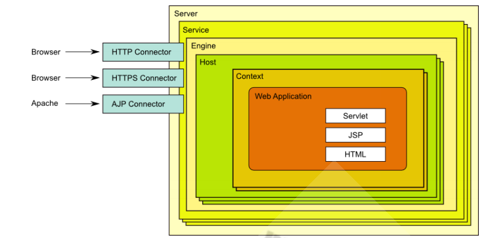
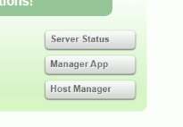
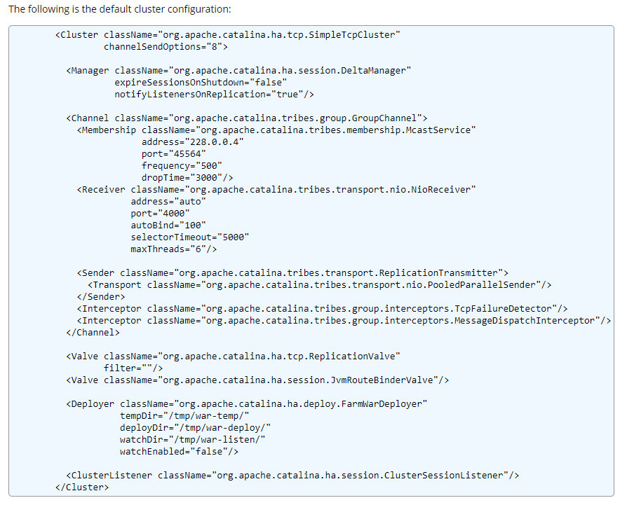
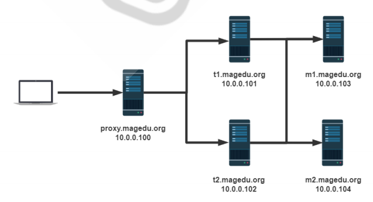

本文主要总结了Tomcat的安装、使用和配置方法。
Tomcat安装和使用
Tomcat 服务器是一个免费的开放源代码的Web 应用服务器，属于轻量级应用服务器，并发性能较差，Tomcat 除了能处理HTML页面，还是一个Servlet和JSP容器，可以负责处理java应用。
目前主流的使用的大版本是7和8。CentOS8包仓库中没有，其他Linux发行版带有的Tomcat版本较旧，依然需要自行下载安装。
官网下载： http://tomcat.apache.org/
国内镜像站点：https://mirrors.tuna.tsinghua.edu.cn/apache/tomcat/
安装和初始配置
Tomcat需要JAVA环境，因此要先安装JDK，可以选择付费的Oracle JDK 或开源的Open JDK。
1
2
3
4
5
6
7
8
9
10
11
12
13
14
15
16
17
18
19
20
21
22
23
24
25
26
27
28
29
30
31
32
33
34
35
36
37
38
39
40
41
42
43
| #如安装Open JDK1.8版本需要以下两个软件包，可直接yum安装
java-1.8.0-openjdk.x86_64 java-1.8.0-openjdk-devel
#安装后可查看版本信息java -version
#下载Tomcat软件后解包，并进到软件目录下
#软件路径加入PATH变量
echo 'PATH=/usr/local/tomcat/bin:$PATH' > /etc/profile.d/tomcat.sh
. /etc/profile.d/tomcat.sh
#修改配置
#若不指定该变量，将无法启动Tomcat
vim /usr/local/tomcat/conf/tomcat.conf
JAVA_HOME=/usr/local/jdk #或/usr/local/jdk/jre
#可采用以下安装后自带脚本管理
catalina.sh #直接运行可查看丰富的用法和描述，可以在后面加上显示的command进行管理
startup.sh #启动Tomcat
shutdown.sh #关闭
#按以上方法启动的Tomcat进程可以看到是由root身份运行，不安全。解决方法如下
#为其进程创建专用账号
useradd -r -s /sbin/nologin tomcat
chown -R tomcat.tomcat /安装路径/tomcat/
#配置service文件
vim /lib/systemd/system/tomcat.service
[Unit]
Description=Tomcat
After=syslog.target network.target
[Service]
Type=forking
EnvironmentFile=/安装路径/tomcat/conf/tomcat.conf
ExecStart=/安装路径/tomcat/bin/startup.sh
ExecStop=/安装路径/tomcat/bin/shutdown.sh
PrivateTmp=true
User=tomcat #使Tomcat进程以普通用户身份运行
Group=tomcat
[Install]
WantedBy=multi-user.target
systemctl daemon-reload
#以后可通过systemd管理
|
文件结构
Tomcat目录下有以下目录
Tomcat组件结构
- Server，代表整个Tomcat容器，一台主机可以启动多tomcat实例，需要确保端口不要产生冲突
- Service，实现组织Engine和Connector，建立两者之间关联关系, service 里面只能包含一个Engine
- Connector，有HTTP（默认端口8080/tcp）、HTTPS（默认端口8443/tcp）、AJP（默认端口8009/tcp）协议的连接器，AJP（Apache Jserv protocol）是一种基于TCP的二进制通讯协议。
- Engine、Host（虚拟主机）、Context(上下文件,解决路径映射)都是容器类组件，可以嵌入其它组件，内部配置如何运行应用程序。
- 可以内嵌到其他组件内，valve、logger、realm、loader、manager等。以logger举例，在不同容器组件内分别定义。
- 集群类组件listener、cluster

conf目录主要配置文件
server.xml 主配置文件
web.xml 每个webapp只有“部署”后才能被访问，它的部署方式通常由web.xml进行定义，其存放位置为WEB-INF/目录中；此文件为所有的webapps提供默认部署相关的配置,每个web应用也可以使用专用配置文件覆盖全局文件中的设置。
context.xml 用于定义所有web应用均需加载的Context配置，此文件为所有的webapps提供默认配置，每个web应用也可以使用自已专用的配置，它通常由专用的配置文件context.xml来定义，其存放位置为WEB-INF/目录中,覆盖全局的文件
其它文件省略
应用部署
将webapp的源文件放置到目标目录，通过web.xml和context.xml文件中配置的路径就可以访问该webapp，通过类加载器加载其特有的类和依赖的类到JVM上。
自动部署：将war包放到webapps/目录下，Tomcat一旦发现多了一个web应用的war包，默认会自动把它解压缩，加载并启动起来，来源于conf/server.xml配置文件的这一行。最终可看到生成同名文件夹。
1
| <Host name="localhost" appBase="webapps" unpackWARs="true" autoDeploy="true">
|
自动部署较为方便，想移除应用项目时仅需删除.war包，过几秒后会发现应用文件夹也被移除。
手动部署：分冷部署，将webapp放到指定目录，才去启动Tomcat服务；热部署，Tomcat服务不停止，需要依赖manager、ant脚本、tcd等工具。
Tomcat配置总结
实际使用前需要解决一个8005端口的安全风险
关闭管理端口
在主配置文件conf/server.xml中可以看到
1
| <Server port="8005" shutdown="SHUTDOWN">
|
8005是Tomcat的管理端口，默认监听在本机上。无需验证就可发送SHUTDOWN字符串关闭server，tomcat接收到后就会执行该命令。但此行不能注释，否则无法启动Tomcat。
解决方法如下
1
2
| <Server port="-1" shutdown="SHUTDOWN"> 无效端口，相当于关闭
<Server port="0" shutdown="SHUTDOWN"> 使用随机端口，但有被扫描到该端口的风险
|
主要配置
1
2
3
4
5
6
7
8
9
10
11
12
13
14
15
16
17
18
19
20
21
22
23
24
25
26
27
| 一般情况下，一个Server实例配置一个Service，name属性相当于该Service的ID
<Service name="Catalina">
连接器配置，包括监听端口，协议，https访问也由该连接器负责
如果以普通用户Tomcat身份运行进程，则不能使用1024以下端口
<Connector port="8080" protocol="HTTP/1.1"
connectionTimeout="20000"
redirectPort="8443" />
引擎设置，其中指定了默认虚拟主机，即以IP地址形式访问本机时访问的虚拟主机
<Engine name="Catalina" defaultHost="localhost">
虚拟主机配置
name 必须是主机名，用主机名来匹配
appBase 当前主机的网页根目录，是相对于 $CATALINA_HOME ，也可以使用绝对路径
unpackWARs 是否自动解压war格式
autoDeploy 热部署，自动加载并运行应用
<Host name="web1.magedu.org" appBase="/data/webapps/" unpackWARs="True" autoDeploy="false">
虚拟主机专有访问日志，"是双引号
<Valve className="org.apache.catalina.valves.AccessLogValve" directory="logs"
prefix="web1_access_log" suffix=".txt" pattern="%h %l %u %t "%r" %s
%b" />
</Host>
如果不加日志也可以只写第一行
|
context配置
该部分配置可实现路径映射：将url映射至指定路径，而非使用appBase下的物理目录，实现虚拟目录功能。应用独立配置，例如单独配置应用日志、单独配置应用访问控制。
1
2
3
4
5
6
7
8
9
10
11
12
13
14
15
16
17
18
19
| 映射指定路径
<Context path="/test" docBase="/data/test" reloadable="true" />
映射站点的根目录
<Context path="/" docBase="/data/website" reloadable="true" />
path：URL路径，如果path与appBase下面的子目录同名，context的docBase路径优先更高
docBase：可以是磁盘文件的绝对路径，也可以是相对路径
reloadable：true表示如果WEB-INF/classes或META-INF/lib目录下.class文件有改动，就会将WEB应用重新加载。生产环境中，建议使用false来禁用。
#范例，软件升级和回滚
</Host>
<Host name="node1.magedu.org" appBase="/data/webapps1">
<Context path="/app1" docBase="/data/app1" reloadable="true" >
</Context>
创建软链接
ln -s /data/app1-v1/ /data/app1
访问http://node1.magedu.org:8080/app1/ 实际上访问了/data/app1-v1/
升级只需换软链接ln -s /data/app1-v2/ /data/app1 或修改配置文件，但需要重新加载
回滚同理
|
多虚拟主机配置实验
模拟部署两个应用，客户端输入域名访问两个网站
1
2
3
4
5
6
7
8
9
10
11
12
13
14
15
16
17
18
19
20
21
22
23
24
25
26
27
28
29
30
31
32
33
34
35
36
37
38
39
40
41
42
43
44
45
46
47
48
| #创建目录，如果设置了Tomcat进程使用普通账号，这两个文件夹需要改所属者
mkdir /data/webapps{1,2}/ROOT -pv
#准备测试jsp文件，内容如下
vim /data/webapps1/ROOT/index.jsp
<%@ page language="java" contentType="text/html; charset=UTF-8"
pageEncoding="UTF-8"%>
<!DOCTYPE html>
<html>
<head>
<meta charset="utf-8">
<title>jsp例子</title>
</head>
<body>
后面的内容是服务器端动态生成字符串，最后拼接在一起
<br>
<%=request.getRequestURL()%>
</body>
</html>
#修改conf/server.xml，添加四行
<Host name="node1.magedu.org" appBase="/data/webapps1">
</Host>
<Host name="node2.magedu.org" appBase="/data/webapps2">
</Host>
#测试
#Windows改域名解析文件后打开浏览器
#访问 http://node1.magedu.org:8080/
后面的内容是服务器端动态生成字符串，最后拼接在一起
http://node1.magedu.org:8080/
#访问 http://node2.magedu.org:8080/
后面的内容是服务器端动态生成字符串，最后拼接在一起
http://node2.magedu.org:8080/
#在Linux上查看
curl http://node1.magedu.org:8080/
<!DOCTYPE html>
<html>
<head>
<meta charset="utf-8">
<title>jsp例子</title>
</head>
<body>
后面的内容是服务器端动态生成字符串，最后拼接在一起
http://node1.magedu.org:8080/
</body>
</html>
|
开启管理页面
Tomcat的状态页可以查看服务器信息，JVM内存使用情况，管理页可以部署和删除应用
Tomcat的默认页面可以看到有几个按钮，点击可进入状态页和管理页面，默认不能访问。访问后提示403，访问被拒绝，根据提示修改配置文件。本质上是访问了webapps/manage文件夹

只允许本机访问
1
2
3
4
| 修改conf/tomcat-users.xml
<role rolename="manager-gui"/>
<role rolename="admin-gui" /> 添加新的role
<user username="admin" password="123456" roles="manager-gui,admin-gui"/> 添加验证用户，可输入用户名密码访问页面
|
允许远程访问
1
2
3
4
5
6
7
| 修改webapps/manager/META-INF/context.xml
<Context antiResourceLocking="false" privileged="true" >
<Valve className="org.apache.catalina.valves.RemoteAddrValve"
allow="127\.\d+\.\d+\.\d+|::1|0:0:0:0:0:0:0:1" />
可以猜到allow为允许的ipv4或ipv6地址，“|”为或的意思，添加允许的网段
allow="127\.\d+\.\d+\.\d+|::1|0:0:0:0:0:0:0:1|192\.168\.\d+\.\d+" />
|
Session复制
尽管可以使用多台Tomcat+反向代理实现Tomcat的高可用，但一台主机下线将会导致session丢失，导致用户体验不佳。
假设有多个Tomcat服务器都将Session持久化，如果节点A下线期间用户切换到了节点B上，节点B发现用户报文携带的节点A的session ID是陌生的，认为是新的会话，原有Sesssion将丢失。因此需要实现Session的高可用性来解决该问题。
以下解决方案具有一定局限性（性能或并发性不佳），生产环境中一般使用Redis，小架构也可以使用memcached。
Tomcat Session Replication Cluster
Tomcat 官方实现的Session 复制集群。此方案的缺点是基于多播实现心跳，TCP单播实现复制，Tomcat集群规模越大越不适合。且高并发连接时，单机上的所有session占据的内存空间非常巨大，甚至耗尽内存。
可直接使用官方配置，稍作修改。
https://tomcat.apache.org/tomcat-8.5-doc/cluster-howto.html

1
2
3
4
5
6
7
8
9
10
11
| 仅有以下内容可能需要修改
address="228.0.0.4"
port="45564"
frequency="500"
dropTime="3000"/>
address="auto"
port="4000"
autoBind="100"
selectorTimeout="5000"
maxThreads="6 #最大线程数
|
Session服务器
使用MSM（memcached session manager）提供将Tomcat的session保持到memcached或redis的程序，可以实现高可用。

1
2
3
4
5
6
7
8
9
10
11
12
13
14
15
16
17
18
19
20
21
22
23
24
25
26
27
28
29
30
31
32
33
34
| #反向代理可以说nginx，HAproxy等软件，调度配置省略
#两台session服务器安装memcached，配置需要相同
vim /etc/sysconfig/memcached
PORT="11211"
USER="memcached"
MAXCONN="1024"
CACHESIZE="64"
OPTIONS=""
#Tomcat配置 在Tomcat安装目录下的conf文件夹修改server.xml
#在最后加入
<Manager className="de.javakaffee.web.msm.MemcachedBackupSessionManager"
memcachedNodes="n1:10.0.0.103:11211,n2:10.0.0.104:11211"
failoverNodes="n1"
requestUriIgnorePattern=".*\.(ico|png|gif|jpg|css|js)$"
transcoderFactoryClass="de.javakaffee.web.msm.serializer.kryo.KryoTranscoderFact
ory"
/>
#另一节点配置完全相同，仅修改该行
failoverNodes="n2"
#需要将以下包放到Tomcat安装目录下的lib（库）目录
asm-5.2.jar
kryo-3.0.3.jar
kryo-serializers-0.45.jar
memcached-session-manager-2.3.2.jar
memcached-session-manager-tc8-2.3.2.jar
minlog-1.3.1.jar
msm-kryo-serializer-2.3.2.jar
objenesis-2.6.jar
reflectasm-1.11.9.jar
spymemcached-2.12.3.jar
|